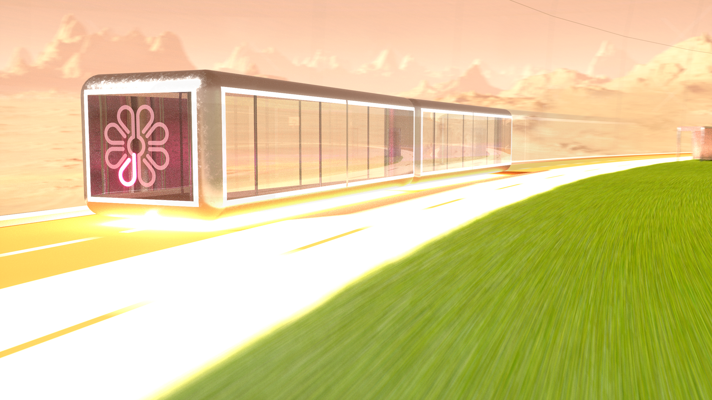

The outer loop mag-tram

The outer loop mag-tram will conveniently take you around the perimeter of Acidalia and operates silently via magnetic levitation. It operates autonomously, and much like an elevator; when you hop on simply select your destination district. If someone else has selected a district that's on the way, the mag-tram will stop there first, before continuing to your destination.